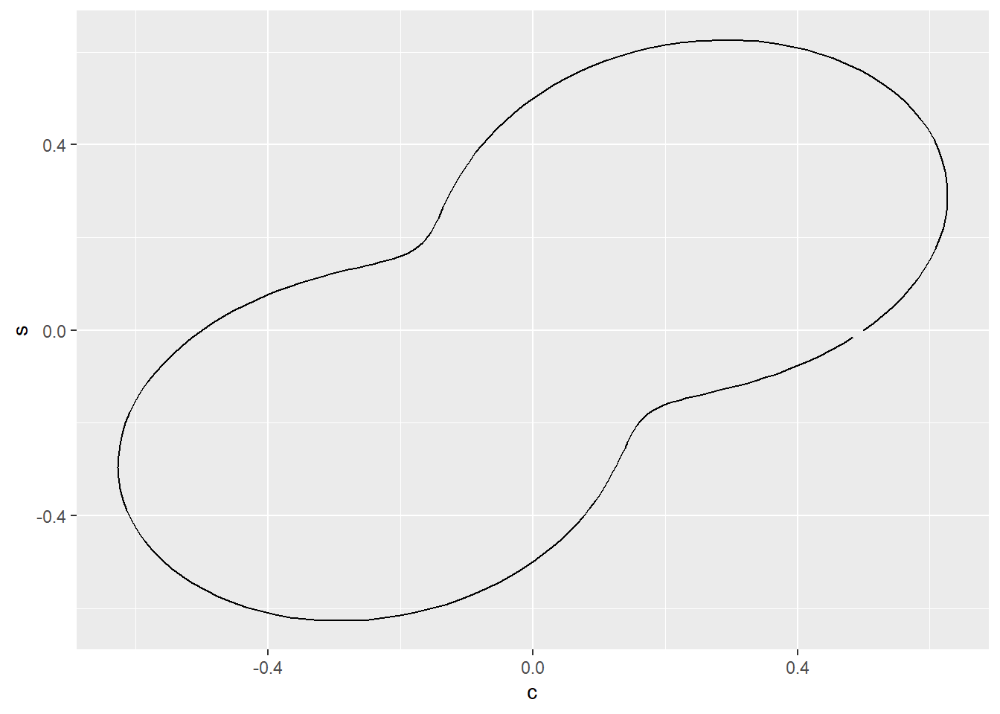

| prefix | suffix | distribution |
|---|---|---|
| [d, p, q, r] | beta | Beta |
| [d, p, q, r] | cauchy | Cauchy |
| [d, p, q, r] | chisq | (non-central) Chi-Squared |
| [d, p, q, r] | exp | Exponential |
| [d, p, q, r] | f | F |
| [d, p, q, r] | gamma | Gamma |
| [d, p, q, r] | lnorm | Log Normal |
| [d, p, q, r] | logis | Logistic |
| [d, p, q, r] | norm | Normal |
| [d, p, q, r] | t | Student t |
| [d, p, q, r] | unif | Uniform |
| [d, p, q, r] | weibull | Weibull |
Statistical Simulation
Part 1, session 3b of Data Mining Intro
Abstract
Introduce basic ideas and methods of statistical simulation studies.
Introduction
[TODO]
Generating Random Numbers from a Given Distribution
As mentioned in an earlier session, the R stats package provides random number generators for commonly used probability distributions. For each random number generator the package also provides the probability density function (for continuous distributions) or the probability mass function (for discrete distributions), along with cumulative versions (incomplete integrals or sums), and the inverse of the cumulative versions, the quantile functions. The naming convention is illustrated by the uniform distribution over a finite interval (unit interval by default).
dunif()density at a given point \(x\)punif()cumulative probability, that \(X \le x\)qunif()quantile, return \(x\) having prescribed cumulative probability \(p\)runif()generate indpendent instances \((X_1, \ldots, X_n)\) of a uniform random variable
Continuous Distributions
The stats package includes the following continuous distributions.
These distributions have interesting histories and relationships. For example a beta variable \(X\) having shape parameters \((\alpha, \beta)\) can be expressed as the ratio \(U/(U + V)\), where \((U, V)\) are independent gamma variables having a common scale parameter, and respective shape parameters \((\alpha, \beta)\). See the resources listed below if interested.
Discrete Distributions
The stats package also includes the following discrete distributions.
| prefix | suffix | distribution |
|---|---|---|
| [d, p, q, r] | binom | Binomial |
| [d, p, q, r] | geom | Geometric |
| [d, p, q, r] | hyper | Hypergeometric |
| [d, p, q, r] | nbinom | Negative Binomial |
| [d, p, q, r] | pois | Poisson |
Again, these distributions have interesting histories and relationships. For example the Poisson distribution can described as the limiting case of binomial distributions, \(\text{Binom}(n, p_n)\) such that the respective expected values, \(n \times p_n\), converge to a finite, non-zero value \(\lambda\) for increasingly large \(n\). Equivalently we can write \(p_n \approx \lambda/n\), so that \(p_n\), the probability of success on a single Bernoulli trial, becomes vanishingly small as the number \(n\) of Bernoulli trials increases. For this reason the Poisson distribution has been called “the law of rare events”.
Example Application
Statistical simulation has been used to evaluate proposed statistical methods. Here’s an admittedly tame example (where the answer has already been determined mathematically).
Let \(\hat{\mathcal{m}}\) and \(\hat{\mu}\) denote the median and mean, respectively, of a random sample from a continuous distribution. For a symmetric distribution (with a defined population mean value), the population median and mean coincide. But the sample mean is highly sensitive to a few outlying values in the sample, and is thus less robust than the sample median for long-tailed distributions.
Consequently, in financial applications and other applications where long-tailed distributions occur, the median is the preferred descriptor of the central value of the sample and of the population.
In some cases the robustness of the sample median comes at a cost. If the population distribution is normal with mean \(\mu\) and variance \(\sigma^2\) then the sample mean has smaller variance than the sample median (although they estimate the same population value).
\[ \begin{align} \text{Var} \left\{ \hat{\mu} \right\} &= \frac{\sigma^2}{n} \\ \\ \text{Var} \left\{ \hat{\mathcal{m}} \right\} &= \frac{\pi}{2} \frac{\sigma^2}{n + 1} \\ \\ \frac{ \text{Var} \left\{ \hat{\mathcal{m}} \right\} }{ \text{Var} \left\{ \hat{\mu} \right\} } &\approx \frac{\pi}{2} \\ &\approx 1.57 \end{align} \]
This ratio of variances in the normal case can be verified by simulation.
In this example, simulation would merely illustrate a property already determined mathematically. But in other situations, statistical simulation may be the best practical way to understand the properties of a proposed statistical procedure, or more generally, a system that entails random events.
Class Exercise
With a teammate, generate a sample of \(n\) pseudo-random numbers following the normal distribution, for example using stats::rnorm(). Calculate \(\hat{\mathcal{m}}\) and \(\hat{\mu}\), the sample median() and mean(). Now repeat that process a total of \(R\) times, recording the values of the sample mean and median in each run. This gives a sample of size \(R\) of the pair \((\hat{\mathcal{m}}, \hat{\mu})\). What is the sample variance of these two estimators? Take 20 minutes to prepare to report your progress to the class.
Monte Carlo Simulation
Monte Carlo simulation encompasses a broad set of algorithms that use random sampling to obtain numerical values. Mathematician Stanislav Ulam led the development of this approach (and coined the name) as part of the Manhattan Project during World War 2. The approach is used when other types of numerical calculation are not feasible.
Example 1: estimate \(\pi\)
Here is a simple illustration. Recall that a circle of radius \(r\) has an area equal to \(\pi \; r^2\). Setting \(r = 1\) we see that the unit circle has an area equal to \(\pi\). Centered at the origin of the plane, the area is divided equally among the four quadrants of the plane. Thus the area within the first quadrant equals \(\pi/4\). We can use random sampling to estimate \(\pi\) as follows.
- Generate pairs of independent standard uniform random variables \(\{ (X_j, Y_j) \}_{j = 1}^n\). They constitute uniformly random points in the unit square.
- Define \(B_j\) to be the Bernoulli indicator function, equal to 1 if \(X_j^2 + Y_j^2 < 1\) and equal to zero otherwise. Note that \(B_j\) has expected value \(\pi/4\).
- Calculate the sample average \(A(B_{\bullet})\) as an estimate of \(\pi/4\).
- Multiply the sample average by 4 as an estimate of \(\pi\).
The precision of the estimate improves as the number \(n\) of randomly generated points increases.
Example 2: estimate area of an arbitrary region
The figure below shows a simple closed curve within the unit square centered at the origin.

The closed curve defines an interior region \(\mathcal{R}\) bounded by the square \(\mathcal{S} = [-0.5, 0.5] \times [-0.5, 0.5]\). We assume that for any point \((x, y) \in \mathcal{S}\) we can determine whether the point is inside or outside \(\mathcal{R}\). The Monte Carlo estimate of the area of this region is the proportion of points randomly selected from \(\mathcal{S}\) that fall within \(\mathcal{R}\) multiplied by the area of \(\mathcal{S}\) (which is 1 in this case).
In the current example, the closed curve shown above is a deformation of the unit circle in which the Euclidean norm at each point, \(t\), along the circle has been multiplied by a prescribed positive continuous function, \(f(t)\). Consequently a point \((x, y)\) is in the interior of the closed curve if \(x^2 + y^2 < f^2(t)\), where \(t = \arctan(y, x)\).
This is a common application of Mote Carlo simulation: estimating the volume of given region \(\mathcal{R}\) in Euclidean space, under the assumption that, for any given point, we can determine whether the point is inside or outside the region.
Importance Sampling
[TODO]
Markov Chain Monte Carlo (MCMC)
[TODO]
Team Exercises
- As in the class exercise, generate \(R\) samples, each a sample of size \(n\), but this time use the Cauchy distribution (
rcauchy()) rather than normal distribution (rnorm()). Calculate the sample variance and construct a histogram of the \(R\) sample means:
\[ \left\{ \hat{\mu}_r \right\}_{r = 1}^R \]
Suppose \((U_1, \ldots, U_n)\) are independent and identically distributed random variables following the standard uniform distribution on the interval \((0, 1)\). Now set \(X_j = - \log_e(U_j)\) for \(j = 1, \ldots, n\). What is the distribution of \((X_1, \ldots, X_n)\)?
In the Monte Carlo illustration above, what is the standard error of estimate of \(\pi\)?
Resources
Distributions in Statistics by Johnson and Kotz
Statistical Distributions by Forbes, Evans, Hastings, and Peacock